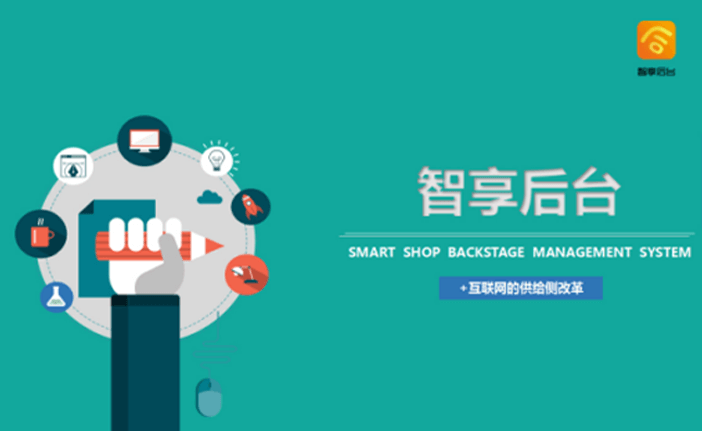
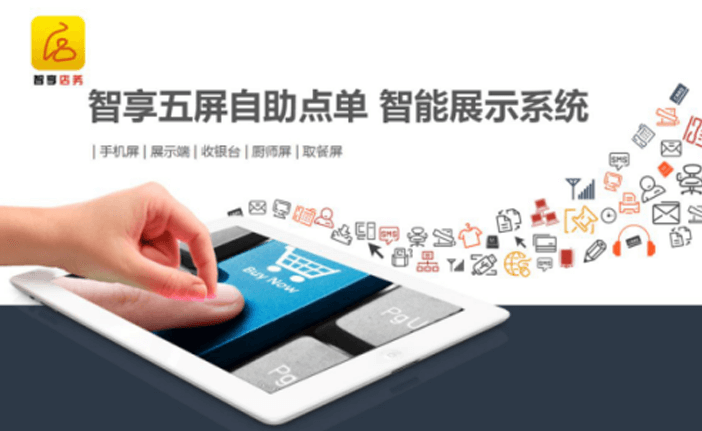
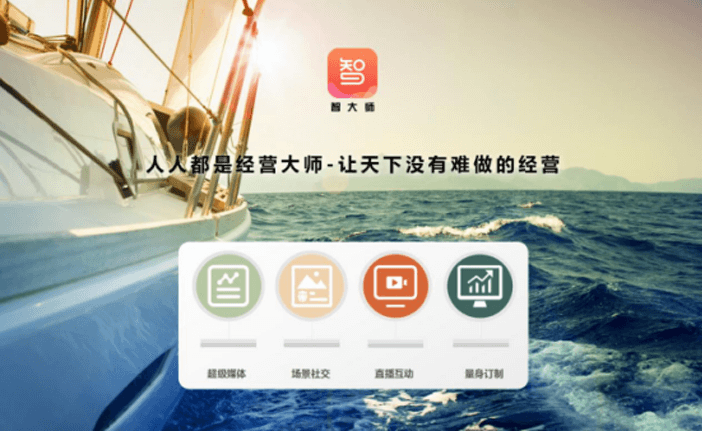
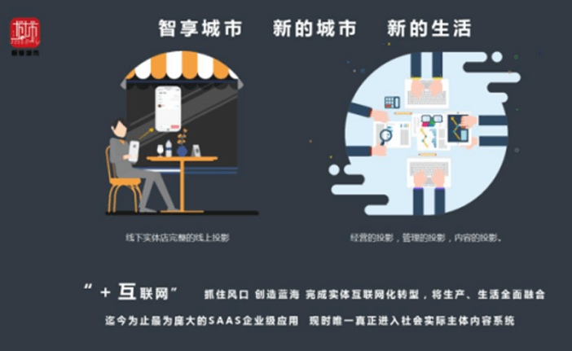

武汉智创工场互联网科技发展有限公司成立于2016年3月份，是香港女人花科技管理国际集团有限公司的全资子公司，旗下同时拥有泡圈科技、修炼之城、智云城市、智享城市网络科技、女人花管理咨询等数家跨行业、跨地区的全资子公司，是在“互联网大潮”中应运而生的高科技互联网企业。
【紧贴时代——针对当下的“三个痛点”创造出了时代的“三个风口、三个蓝海！”】
重塑商业未来形态，构筑城市未来生活——创造价值、改变中国
武汉智创工场互联网科技发展有限公司成立于2016年3月份，是香港女人花科技管理国际集团有限公司的全资子公司，旗下同时拥有泡圈科技、修炼之城、智云城市、智享城市网络科技、女人花管理咨询等数家跨行业、跨地区的全资子公司，是在“互联网大潮”中应运而生的高科技互联网企业。
【紧贴时代——针对当下的“三个痛点”创造出了时代的“三个风口、三个蓝海！”】
A.智享后台——让所有门店转型为互联网公司，完成“+互联网”的转型
B.智享店务——店务流程智能化，消费流程智慧化
C.智享大师——智者的修炼空间， 创业者的私家花园，优秀者的同一首歌
D.智享城市——智能经营 智慧生活
